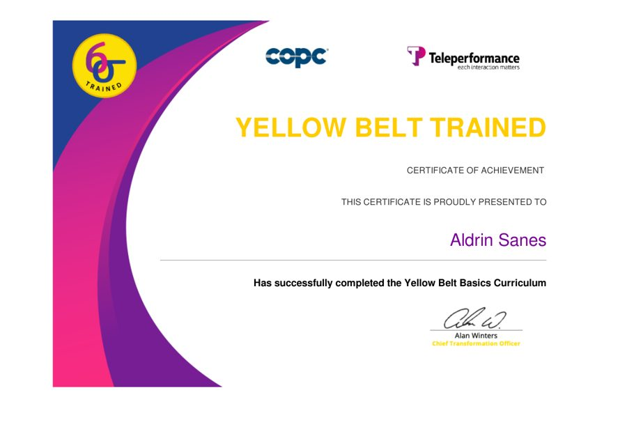

Aldrin Sanes
Data & Reporting Specialist, building toward software development
- Negros Oriental, Philippines · Remote
- aldrin.sanes@gmail.com
- github.com/AldrinS13
- linkedin.com/in/aldrin-sanes-188865209
Summary
Data and reporting specialist with more than ten years in BPO workforce management and healthcare operations. I build the trackers, audit tools and dashboards that teams use every day, mostly in Google Sheets and Apps Script, and I trace reporting errors back to their root cause. I have trained workforce management teams in five regions and written SOPs adopted by every WFM employee in my former organization. I am now learning JavaScript, React and React Native to build these tools as software.
Experience
-
Feb 2025 – Sep 2026 1 yr 8 mos
Data, Reporting & Admin Analyst
Healthcare company · Remote
- Built a form-driven time log system in Google Forms, Sheets and Apps Script for about 50 health coaches. It has processed more than 11,000 entries and gives each coach a live personal log.
- Built an audit tool that reconciles coach time logs against the official care-platform record. In early tests it matched over 97% of entries automatically, so QA reviews only the exceptions.
- Built and launched an IT helpdesk ticketing system with SLA tracking and two live dashboards, using formulas only. It was my first fully finished project.
- Kept daily records accurate, reviewed data for errors, gaps and unusual patterns, and reported findings to the right team members.
- Used AI tools (Claude, Gemini, ChatGPT, Perplexity AI) to speed up reporting and analysis, with accuracy checks on every output.
Case files: Time Log Tracker · Audit Tool · IT Helpdesk
-
Mar 2022 – Jan 2025 2 yrs 11 mos
WFM Senior Training Supervisor
Teleperformance · Remote
- Designed and delivered training programs for workforce management teams in the US, Canada, India, LATAM and the Philippines.
- Created standard operating procedures adopted by all WFM employees, improving consistency across business lines.
- Built training materials, learning modules and development frameworks, and hosted roadshows to raise engagement.
- Prepared executive presentations for quarterly and annual business reviews, and proposed performance improvements with senior leadership.
-
Dec 2020 – Feb 2022 1 yr 3 mos
WFM Senior Analyst, Training Specialist
Teleperformance · Metro Cebu · Hybrid
- Mentored analysts and real-time analysts on forecasting, scheduling and reporting.
- Ran performance audits and knowledge checks to catch errors and keep quality high.
- Supported leadership in transitioning new accounts with workforce plans and training.
-
Dec 2016 – Nov 2020 4 yrs
WFM Real-Time Analyst
Teleperformance · Metro Cebu · On-site
- Monitored schedule adherence, service levels and KPIs in real time and acted before problems grew.
- Worked with operations and support teams on attendance, shrinkage and productivity.
-
Nov 2014 – Nov 2016 2 yrs 1 mo
Customer Service Representative
Teleperformance · Metro Cebu · On-site
- Handled inbound and outbound calls for a magazine subscription account.
- Exceeded sales and customer satisfaction targets, and was promoted into workforce management.
Skills
- Data & reporting
- Google Sheets (FILTER, QUERY, INDEX/MATCH, ARRAYFORMULA, COUNTIFS, SUMIFS), Excel, regex, dashboards, reconciliation and audits, data quality checks
- Automation
- Google Apps Script (JavaScript), Google Forms, time-based triggers, script locks, FormMule
- Development
- HTML, CSS, JavaScript, Git and GitHub. Learning: React, React Native, TypeScript
- Workforce management
- Forecasting, scheduling, real-time adherence, SLA and KPI tracking, shrinkage
- Training & documentation
- SOPs, training modules, process guides, runbooks, executive presentations
- AI tools
- Claude, Gemini, ChatGPT, Perplexity AI
Certification
Six Sigma Yellow Belt Trained
COPC and Teleperformance · Yellow Belt Basics Curriculum
